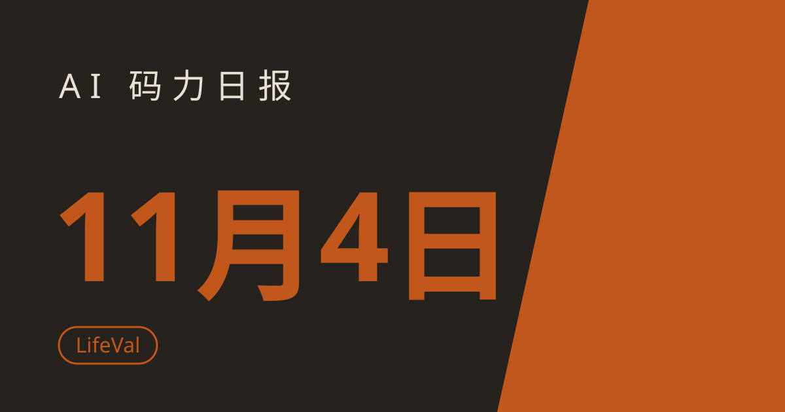

AI 码力日报 · 2026年11月4日

⚡ 一句话速览
- Anthropic 在招股文件里自曝风险：Claude 可能"很快"触及它自己定的递归自我改进阈值，评估速度可能跟不上模型进步的速度。
- OpenAI 出了个考"过日子"的基准 LifeVal：GPT-6 Astra 拿到 80.6%，比 GPT-5.2 的 49.3% 高了一大截——但卷子是自己出的、分也是自己打的，别当成第三方排名看。
- Google 在欧盟法院吃了个版权警告：法院顾问说 Gemini 绕过付费墙、或照搬出版商表达形式作答时，可能侵犯出版商权利，正式裁决几个月内出。
- DeepSeek 开源了超智能体原型：一个常驻路由器读需求、拆给并行 worker 干活，长任务的 agent 形态又多了一份公开代码可以抄。
🤖 今日 AI Coding 动态
Anthropic 在 S-1A 里自曝：Claude 可能"很快"就摸到递归自我改进的门槛
跟你有啥关系：这不是科幻警告，是写给投资人的风险披露——它直接关系到下一代模型会不会在没人完全看懂的情况下越变越强。Anthropic 11 月 3 日修订的 S-1/A 文件里写道，按内部估计，Claude"可能很快"达到它《负责任扩展政策》中"由 AI 带来的显著加速进展"的定义，也就是递归自我改进（RSI）的阈值；但文件同时划清界限：目前没有任何一款模型被认定越过这条线，Claude 也还没到能自主设计、训练下一代模型的地步。文件里还有几组值得记的数字：Anthropic 称到 2026 年 5 月，Claude 已贡献了其软件项目 80% 以上的代码；8 月的测量里，Claude 主导了 26% 的 AI 研发任务，而 2 月还不到 1%。同份文件披露三季度收入 17 亿美元、同比涨 11 倍多，但环比增速已从二季度的 144% 放缓到 47%。我的判断：把"可能很快"读成"已经实现"就错了，真正的信号是 Anthropic 自己承认——它"过去没能、未来也可能没能"在加速发生当时就识别出加速。写 agent 的人更该关心后半句：评估工具链跟不上模型迭代速度时，安全评审会先成为瓶颈。原文链接
OpenAI 出了个考"过日子"的基准：GPT-6 Astra 80.6%，但卷子是自己出的
跟你有啥关系：选模型时你迟早会遇到"到底哪个更能干活"的问题——LifeVal 测的正是找托儿所、办政府手续、按预算买菜这种真人每天要干的杂事，而不是考试题。OpenAI 11 月 2 日发布了 LifeVal：任务来自美国时间使用调查、多国时间使用研究和一项 3,995 人的问卷，覆盖育儿、健康、教育、家务管理、个人财务、购物和政府服务七类；模型要靠浏览器操作、电脑操作和连接器把活干完，而不是只给建议。跑分按 OpenAI 自家图表列出来：GPT-5.2（2025 年 12 月）49.3%、GPT-5.4（2026 年 3 月）73.0%、GPT-5.5（4 月）77.4%、GPT-5.6（7 月）80.0%、GPT-6 Astra（9 月）80.6%——最大的 23.7 分涨幅来自 GPT-5.2 到 GPT-5.4 那一次，之后三次加起来才 7.6 分，曲线已经贴近 80% 的天花板。先把丑话说在前面：这套分是 OpenAI 自建、自测、自评，只列自家模型，没有公开题集、没有第三方 leaderboard，80.6% 不能直接读成"现实里 80% 的杂事都能办妥"。我的判断：LifeVal 的价值不在排名，在于它把"agent 能不能替你跑腿"变成可追踪的曲线——等它开放给第三方模型跑分时，再拿它当选型依据，现在先看趋势别看绝对值。原文链接
欧盟法院顾问给 Gemini 判了个"可能侵权"：绕过付费墙、照搬表达形式就踩线
跟你有啥关系：这不是模型新闻，但它决定了欧洲用户以后从 AI 里问到的新闻答案会不会变少、变贵。路透 11 月 3 日报道，欧盟最高法院的法院顾问 Maciej Szpunar 在匈牙利网站运营商 Like Company 诉 Google 的案子里发表意见：当 LLM 聊天机器人抓取出版商网站的文章、改写后作答时，在特定情形下可能侵犯出版商权利——具体是两种情形：非法绕过付费墙等技术壁垒去取内容，或以可辨认的方式复用原文的表达形式。顾问同时指出，没有证据表明 Google 用这家出版商的文章训练过 Gemini；法院通常会采纳顾问意见中的多数观点，正式裁决将在未来几个月作出。Google 方面回应称，欧盟的文本与数据挖掘例外对欧洲竞争力至关重要，并指出顾问意见也承认欧盟法律允许对公开信息做 AI 训练。我的判断：这案子真正的影响不在"赔不赔"，而在"以后怎么答"——如果裁决落地，面向欧洲用户的新闻类回答大概率会更谨慎、引用更克制，做内容产品的先把合规成本算进去。原文链接
11 月 3 日起，四款老 Claude 输出也被打上隐形水印，没得选
跟你有啥关系：如果你在生产环境里用 Claude 的输出做二次加工、存档或对外发布，水印这事迟早会撞上你的合规流程。Anthropic 从 11 月 3 日起把隐形文本水印扩展到四款更老的模型：Mythos 5、Opus 4.7、Opus 4.6 和 Sonnet 4.6，此前水印只覆盖最新款；Anthropic 称这次全球铺开、没有退出选项，不增加字符、不增加 token、不影响价格，Bedrock 上的 Claude 模型几天后跟进。检测口子收得很紧：只对监管机构、执法部门、媒体、事实核查员、独立研究者、教育机构、欧盟民间社会组织和负有合规义务的企业开放私有预览 API，普通用户既看不见也去不掉。背景是欧盟《人工智能法案》第 50 条：AI 生成内容必须以机器可读方式标注，该义务自 2026 年 8 月 2 日起适用，已上市系统的过渡期到 12 月 2 日截止。我的判断：对开发者来说这事不用改代码，但要改预期——凡是经 Claude 之手的文本，默认都带上了可追溯标记，对外发布前先过一遍自己的合规清单。原文链接
DeepSeek 开源超智能体原型：一个路由器 + 一群并行打工 agent
跟你有啥关系：长任务 agent 现在的标准形态越来越清晰——顶层一个路由器拆活、底下一堆 worker 并行干，而 DeepSeek 这次直接把这套编排代码开源了。DeepSeek 的 dsh-superagent-prototype 是一个常驻路由器：它对照着 GitHub 仓库读请求、把工作分给并行的 worker 会话去执行，目标是"更自主的 agent 系统"。这份代码的价值不在性能数字（原型阶段本来就没有），而在于它是公开可读的编排实现：路由逻辑、任务拆分、worker 并行的方式都能直接抄，比看发布会 PPT 管用。我的判断：如果你正在搭自己的多 agent 系统，先读这份原型再决定要不要自己造轮子；如果只是普通用户，等它长成可用产品再碰也不迟。项目地址
📱 AI 应用新品
Google Guided Learning 进 Classroom：老师布置"只启发、不给答案"的 AI 辅导，学生账号默认全关
是什么：Google 11 月 3 日宣布，Gemini 的 Guided Learning（引导式学习）模式正式全球登陆 Google Classroom，老师可以布置一对一辅导活动，AI 围着课堂材料、用提问和拆解步骤带学生自己想出来，而不是直接给答案；同款能力本月晚些时候还会在美国部分学校里试点进 Google Search。解决什么问题：学生拿 AI 抄答案抄到老师没法教——Guided Learning 的卖点就是"有益的挣扎"：让学生保持挑战感又不至于放弃；东京大学 300 多名学生的随机对照试验里，用 Guided Learning 的学生成绩提升 8.1 个百分点，高于只用普通在线资源的 5.3 个百分点。免费额度/价格：学校场景内使用，面向 Workspace 教育版账号；但真正的大动作在管控上：Google 宣布 Gemini、NotebookLM、Classroom 里的 Gemini 和 Google Search 将对 K-12 学生账号默认全部关闭，直到学校管理员明确开启——也就是说，不接受 AI 功能的学校，学生连 Search 都用不了，2027 年初会给学校两个二选一选项。适合谁：用 Google Classroom 的老师和学校管理员先看；普通用户不用急，Search 试点只在美国部分学校。原文链接
🐑 今日羊毛
AssemblyAI 新账号送 $50 免费额度：不过期、不用绑卡，语音转录直接用
一句话：AssemblyAI 给新账号 $50 免费额度，覆盖预录制转录、实时转录、语音理解和护栏功能，额度不过期，起步不用信用卡。
- 怎么薅：在 AssemblyAI 官网免费注册账号（不用绑卡），额度直接到账；注意 LLM Gateway 不在免费额度范围内，别往那儿烧。直达链接
- 有效期：新账号注册即得（截至撰写时），额度不过期，用完后续费才需绑卡
- 适合谁：要做语音转录、会议纪要、音频处理实验的开发者和学生；约省 $50
Runware 初创计划 Starter 档：最高 $1,000 免费推理额度，不用押金
一句话：Runware 的初创计划里唯一真正免费的档是 Starter：给种子期前、有实际产品的团队按评分给 $100 一档、最高 $1,000 的推理额度，覆盖图片、视频、音频、3D 和 LLM API，额度不过期。
- 怎么薅：在 Runware Startup Program 页选 Starter 档提交申请，附上产品、进展和预期用量证据，等邮件回复（通常一周内）；千万别把 Growth/Scale 档当免费——那两档要先押 $25,000/$50,000 才能拿返点。直达链接
- 有效期：申请开放中（截至撰写时），以申请页实时规则为准
- 适合谁：种子期前、有真实产品且核心用到 AI 推理的创业团队；个人开发者不符合条件，别凑这条
Totalum：注册送 50 credits、能建 2 个项目，带数据库和登录的真应用免费搭
一句话：AI 应用搭建器 Totalum 的免费档给 50 个一次性 credits、2 个项目，带托管 SQL 数据库和登录功能，适合从零搭一个能跑起来的小应用。
- 怎么薅：在 Totalum 免费注册，用一句话描述你要的应用，生成后直接在平台里预览、改、发布；免费档能看代码，下载代码和 GitHub 同步要到 Starter（$29/月）才开。直达链接
- 有效期：免费档常驻（截至撰写时，11 月 3 日刚核对过各家免费档），50 credits 用完为止、不按月刷新
- 适合谁：想快速验证一个带数据库和登录的小产品想法、又不想先掏钱的人
⭐ 今日 GitHub 热门项目
vercel-labs/agent-desktop：给 agent 一个"不用截图"的电脑操作 CLI，首日涨 2,275 星
一句话介绍：Vercel Labs 的 computer-use CLI，让 AI agent 通过操作系统的无障碍树（accessibility tree）看界面、点按钮、打字，全程不靠截图和像素匹配。解决什么问题：截图式 computer-use 又贵又脆——agent-desktop 把界面读成带 ref 的 JSON，agent 对 ref 下 click/type 指令、再读一遍验证结果，循环就跑起来了；它本身不含模型，只是个 CLI 和 C 库，macOS、Windows、Linux 都支持。⭐ 约 12,556（截至撰写时，11 月 3 日首日 +2,275）。适合：给自己的 agent 接电脑操作能力的人；注意快照、剪贴板里可能含隐私内容，别往公开日志里倒。项目地址
deepseek-ai/dsh-superagent-prototype：DeepSeek 的超智能体编排原型，路由器 + 并行 worker 的公开实现
一句话介绍：DeepSeek 开源的多 agent 编排原型：常驻路由器读请求、按 GitHub 仓库上下文拆任务，分给并行 worker 会话执行。解决什么问题：长任务光靠一个 agent 串行跑又慢又容易跑偏，这份原型把"拆活—并行—汇总"的骨架公开出来，搭多 agent 系统的人可以直接读代码、改自己的版本。⭐ 约 15,000（截至撰写时）。适合：正在搭多 agent 编排、想参考一份真实实现的开发者；先说清楚——这是原型不是产品，别直接拿它跑生产任务。项目地址
storytold/craft-anything：让 agent 把任意软件"逆向"出来，再照着做一个
一句话介绍：开源的软件逆向工程工具：理解任意软件是怎么工作的，再生成类似的软件版本。解决什么问题：想学一个产品的实现、或者想快速复刻某个交互时，以前得自己一点点抠；craft-anything 把"分析软件行为"这一步交给 agent，Rust 写就，适合研究和学习场景。⭐ 约 5,900（截至撰写时，11 月 3 日趋势榜数据）。适合：做逆向研究、竞品学习、想理解软件结构的人；注意只用它学技术、做自己的东西，别拿去抄别人的专有产品。项目地址
🤗 Hugging Face 热门模型
ccore/Qwen3.5-4B-3D-Coder：4B 小模型一句提示出 Three.js 3D 场景，本地就能跑
是什么：独立开发者基于 Qwen3.5-4B 微调的早期预览模型（注意：不是 Qwen 官方发布），专攻通用编程和高质量 Three.js 3D 场景生成，训练数据 4,146 个场景样例已公开。能干嘛：本地跑最现实——提供 Q4_K_M / Q8_0 GGUF 和完整 FP16 权重，llama.cpp 加载就能用；接上参考图还能按图生成 Three.js 场景；给它一句"做一个体素风树岛"就能吐出一个自包含 HTML 文件。下载约 91,100、点赞约 602（截至撰写时）。适合谁：想在本地玩 3D 生成、做网页 3D 演示、教 Three.js 的人；先说清楚——这是早期预览版，个别场景要多试一次或手动修 bug，别指望一次全对。模型地址
🛠️ 值得一试的工具：Ideavo
是什么：11 月 2 日宣布永久免费的全栈 AI 应用搭建器：平台本身不收订阅费、不设 credit 上限、不加价转卖模型——你接自己的 API key（OpenAI、Anthropic、Google、OpenRouter、Kimi 等），模型费直接付给厂商。解决什么痛点：Lovable、Replit 这类平台把模型费包进自家 credit 池、加价卖，账算不清；Ideavo 把"搭建工具"和"模型算力"拆开，项目数和功能不设付费墙，号称已有 10 万活跃用户。免费额度：平台功能全免费，模型费自付——也就是说"免费"指的是不收平台费，不是模型白嫖，这点别误读。
verdict： 观望——拆分计费的思路是对的，适合已经有 API key、想省平台溢价的人；但 10 万用户是厂商说法、免费档的长期稳定性还没经过验证，先拿一个小项目试水，别把主力产品押上去。工具地址
🎓 3 分钟小教程：给你的 agent 装上电脑操作能力（agent-desktop）
前置条件：一台 Mac、Windows 或 Linux 电脑，装好 Node.js；macOS 需要给终端授"辅助功能"权限。
- 安装并检查状态（可复制）：
npm install -g agent-desktop
agent-desktop status # 看平台、权限、支持的界面
agent-desktop permissions --guide # macOS：一步步带你开辅助功能授权
- 先看再动：对着一个 App 抓一张界面快照，只列可交互元素：
agent-desktop snapshot --app Finder -i
- 按快照里的 ref 操作，再抓一次验证结果：
agent-desktop click @s8f3k2p9:e8 # ref 照抄快照里的，别手写
agent-desktop snapshot --app Finder -i
- 想让 agent 自己用：跑
agent-desktop skills get desktop拿操作指南装进你的 agent harness（或npx skills add https://github.com/vercel-labs/agent-desktop --skill agent-desktop）。
预期效果：三分钟内走通"安装-授权-快照-点击-再快照验证"全程，之后你的 agent 就能不靠截图、直接读写桌面应用的界面元素；记住一点：操作默认是无头（不移动真实鼠标），要看真实指针动才加 --headed。
数据截至撰写时，仅供参考。